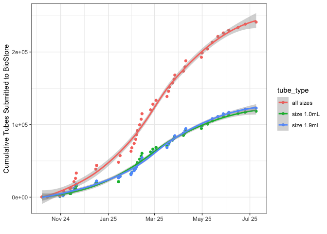
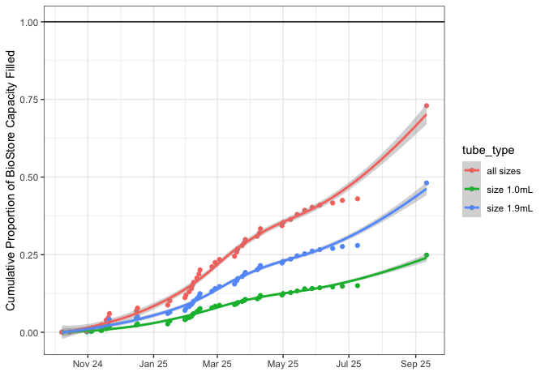
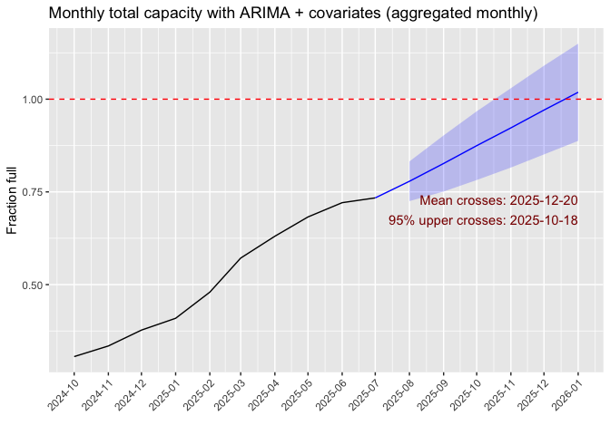

The goal of biostoreCapacity is to attempt to predict when VUMC’s institutional resource BioStore II freezer will be full and unable to store any additional ECHO biospecimens.
To estimate this, the data in the model should try to include:
- Historical data of the rate of freezer filling from ECHO. $\color{green}{\text{✓}}$
- Current and future biospecimen kit builds. $\color{green}{\text{✓}}$
- Expected number of biospecimens to be collected over time. $\color{red}{\text{✘}}$
($\color{green}{\text{✓}}$) means we have that data.
($\color{red}{\text{✘}}$) means WE AS THE LAB CORE are missing (some of) that specific information, but it does exist!.
What is the total BioStore II capacity?
The simplest equation for calculating BioStore capacity is:
where:
* is the number of ECHO 1.0 ml tubes already stored (or pending) in the BioStore (as of 2025-09-02).
* is the number of 1.0 ml tubes still to be collected for ECHO.
* is the number of ECHO 1.9 ml tubes already stored (or pending) in the BioStore (as of 2025-09-02).
* is the number of 1.9 ml tubes still to be collected for ECHO.
* is the absolute maximum number of 1.0 ml tubes that can be stored in the BioStore (assuming 0 1.9 ml tubes).
* is the absolute maximum number of 1.0 ml tubes that can be stored in the BioStore (assuming 0 1.9 ml tubes).
Both and can increase, but as one increases the capacity for the other decreases. The total capacity cannot exceed 1, or 100%.
What should go into the forecast model of when the BioStore will be at capacity?
How can we estimate both and above, and when the capacity of the BioStore will be full?
This is the data that I think we need to predict when the BioStore will be full:
- Historical data (time series data on number of ECHO tubes added to the BioStore over time). $\color{green}{\text{✓}}$
- Expected number of kits that will be collected by kit type over time. $\color{red}{\text{✘}}$
- Expected number of kits over time needs to include ability to handle complexities introduced due to “specialized” kits, which are not collected by all sites. $\color{yellow}{\text{◎}}$
- Number of tubes in current kit builds per each kit type. $\color{green}{\text{✓}}$
- Proportion of tubes from each kit type expected to be sent back to the biorepository. (e.g., may get only a tiny bit of urine from young babies, and so may not receive all three 1.9ml tubes for storage). $\color{yellow}{\text{◎}}$
General proposed model structure
Here’s an idea of the kind of formula I’m thinking of, where is “Freezer Filling”:
First, we can attempt to make a model using the historical data of ECHO submissions to the BioStore:
Second, we know there were changes to the ECHO protocol that will mean the historical rate of data can’t be relied on alone, as we need to consider other predictor variables:
where:
is the expected number of participants from whom specimens will be collected from. WE DO NOT HAVE THIS DATA.
is the biospecimen collection schedule over time.
is the number of tubes per each biospecimen collection kit.
is some sort of drop-out rate; participant drop-out, not all tubes from a kit being returned to the biorepository, etc.
The final model would be something mixing the two above models:
in all models isn’t mean to indicate error in the colloquial sense, but to allow for random variation and the effects of variables not captured in the model.
Usage
You can install the development version of biostoreCapacity from GitHub with:
# install.packages("pak")
pak::pak("mshilts1/biostoreCapacity")Eventually, I’m going to attempt to put this on Shiny so it’s easy for anyone to use, but I will still keep the source code transparent on GitHub.
library(biostoreCapacity)
#> Registered S3 method overwritten by 'quantmod':
#> method from
#> as.zoo.data.frame zooLoad in data above that we do have
Historical data
historical_data <- readHistorical()
historical_data_long <- longifyReadHistorical() # same thing as above, but in "long" format for easier plotting
historical_data_long_proportions <- longifyReadHistorical(total_or_prop = "prop") # same as directly above, but proportions of freezer capacity instead of raw numbersPlot rate of accessioning over time:
library(ggplot2)
ggplot(historical_data_long, aes(x = date, y = total, colour = tube_type)) +
geom_point() +
geom_smooth() +
theme_bw() +
ylab("Cumulative Tubes Submitted to BioStore") +
xlab("") +
scale_x_date(date_breaks = "2 month", date_labels = "%b %y")
#> `geom_smooth()` using method = 'loess' and formula = 'y ~ x'
Plot overall proportion of BioStore filled over time:
This includes “pending” tubes, which are tubes that are still at the sites but will be shipped here eventually and should be counted towards the BioStore’s total inventory.
ggplot(longifyReadHistorical(total_or_prop = "prop", add_pending = TRUE), aes(x = date, y = total, colour = tube_type)) +
geom_point() +
geom_smooth() +
theme_bw() +
ylab("Cumulative Proportion of BioStore Capacity Filled") +
xlab("") +
scale_x_date(date_breaks = "2 month", date_labels = "%b %y") +
geom_hline(yintercept = 1)
#> `geom_smooth()` using method = 'loess' and formula = 'y ~ x'
Eric Koplin’s ARIMA model
Eric Koplin has built an ARIMA model using the forecast package to predict when the BioStore would be full based on the historical rate of filling:

Site collection info pushed to elvislims from Bio-Track
Just created this function and testing if it’s working
site_collections()
#> # A tibble: 204,017 × 16
#> site_id_randomized number_of_containers container_type capacity
#> <chr> <int> <chr> <int>
#> 1 2f65c9a05b770edb650f839c06514908 119 [FH prefixed]… 48
#> 2 2f65c9a05b770edb650f839c06514908 119 [FH prefixed]… 48
#> 3 2f65c9a05b770edb650f839c06514908 119 [FH prefixed]… 48
#> 4 2f65c9a05b770edb650f839c06514908 119 [FH prefixed]… 48
#> 5 2f65c9a05b770edb650f839c06514908 119 [FH prefixed]… 48
#> 6 2f65c9a05b770edb650f839c06514908 119 [FH prefixed]… 48
#> 7 2f65c9a05b770edb650f839c06514908 119 [FH prefixed]… 48
#> 8 2f65c9a05b770edb650f839c06514908 119 [FH prefixed]… 48
#> 9 2f65c9a05b770edb650f839c06514908 119 [FH prefixed]… 48
#> 10 2f65c9a05b770edb650f839c06514908 119 [FH prefixed]… 48
#> # ℹ 204,007 more rows
#> # ℹ 12 more variables: number_of_specimen <int>, specimen_type <chr>,
#> # sample_type <chr>, storage_date <chr>, nominal_volume <chr>,
#> # partial_aliquot <lgl>, partial_volume <dbl>, tube_size <chr>,
#> # specialized_whole_blood <int>, specialized_breast_milk <int>,
#> # specialized_urine <int>, shipped <int>Future kit builds and biospecimen collection protocol
We can’t really use this information yet, because we do not have a clear estimate of the number of participants.
biospecimen_collections <- readCollections()
biospecimen_collections
#> # A tibble: 27 × 29
#> collection_id kit_type biospecimen_type participant tube_size tubes_per_kit
#> <chr> <chr> <chr> <chr> <chr> <dbl>
#> 1 breastmilk_1.9… breastm… breastmilk maternal 1.9ml 8
#> 2 breastmilk_1ml… breastm… breastmilk maternal 1ml 10
#> 3 cord_blood_1.9… cord_bl… cord_blood child 1.9ml 6
#> 4 cord_blood_1ml… cord_bl… cord_blood child 1ml 10
#> 5 placenta_1.9ml… placenta placenta maternal 1.9ml 16
#> 6 urine_cup_mate… urine_c… urine maternal 1.9ml 3
#> 7 urine_cup_mate… urine_c… urine maternal 1.9ml 3
#> 8 urine_diaper_1… urine_d… urine child 1.9ml 3
#> 9 urine_cup_curr… urine_c… urine partner 1.9ml 3
#> 10 urine_cup_mate… urine_c… urine maternal 1.9ml 3
#> # ℹ 17 more rows
#> # ℹ 23 more variables: proportion_from_kit_collected <dbl>, visit <chr>,
#> # visit_logical_order <dbl>, specimen_type <chr>, y_2025 <dbl>, y_2026 <dbl>,
#> # y_2027 <dbl>, y_2028 <dbl>, y_2029 <dbl>, y_2030 <dbl>,
#> # y_2025_proportion <dbl>, y_2026_proportion <dbl>, y_2027_proportion <dbl>,
#> # y_2028_proportion <dbl>, y_2029_proportion <dbl>, y_2030_proportion <dbl>,
#> # specialized_obesity <chr>, specialized_obesity_proportion <chr>, …Information in readCollections() that can be assumed to be “true” and constant for the sake of building the model:
- All columns with information about the kit builds:
-
collection_id,kit_type,biospecimen_type,participant,tube_size,tubes_per_kit.
-
- All columns about the biospecimen collection timeline:
-
visit,specimen_type,y_2025,y_2026,y_2027,y_2028,y_2029,y_2030,specialized_obesity,specialized_chemphys,specialized_lifestyle.
-
Speculative columns all contain the word “proportion” in the name:
Only read below if you want more details
A more thorough description of every column in readCollections():
- collection_id: a unique ID. a concatenation of kit_type, tube_size, visit, and specimen_type.
- kit_type: concatenation of biospecimen_type and participant.
- biospecimen_type: type of biospecimen being collected (e.g., urine or blood, etc…).
- participant: specimen to be collected from an ECHO child, child’s mother, or child’s mother’s current partner.
- tube_size: whether tube is 1.0mL or 1.9mL (1.9mL tubes take up more space in the BioStore.).
- tubes_per_kit: number of tubes of specified size in that specific kit.
- proportion_from_kit_collected. what proportion of tubes in that kit are we expecting to be returned to be stored in the BioStore? for example, newborn babies may not produce enough urine for all three 1.9mL tubes to be filled and returned. maybe only two will be returned.
- visit. time point in child’s or child’s mother’s life when specimen is collected.
- visit_logical_order. not really that useful here, but orders the visit column by the logical order of an ECHO child’s life (sort of; due to preconception protocol, that gets complicated).
- specimen_type. is specimen considered by ECHO a core, preconception, or specialized specimen? this is important because sites are expected to at least try to collect every core specimen, while sites are only allowed to collected specific specialized specimens. the preconception specimens are somewhere in the middle.
- y_2025. 1 (yes)/ 0 (no) column. is this specific specimen to be collected in calendar year 2025?
- y_2026. same as for y_2025, but calendar year 2026.
- y_2027. same as for y_2025, but calendar year 2027.
- y_2028. same as for y_2025, but calendar year 2028.
- y_2029. same as for y_2025, but calendar year 2029.
- y_2030. same as for y_2025, but calendar year 2030.
- y_2025_proportion: this is set to 0.25 because there’s only about 25% of calendar year 2025 left.
- y_2026_proportion: leave at 1 unless there’s some reason to think specimens won’t be collected for all of 2026.
- y_2027_proportion: leave at 1 unless there’s some reason to think specimens won’t be collected for all of 2027.
- y_2028_proportion: leave at 1 unless there’s some reason to think specimens won’t be collected for all of 2028.
- y_2029_proportion: leave at 1 unless there’s some reason to think specimens won’t be collected for all of 2029.
- y_2030_proportion: leave at 1 unless there’s some reason to think specimens won’t be collected for all of 2030.
- specialized_obesity: is that biospecimen being collected by sites where the PI selected “obesity” as an outcome of interest?
- specialized_obesity_proportion: proportion of participants from sites where PI selected “obesity” as outcome of interest.
- specialized_chemphys: is that biospecimen being collected by sites where the PI selected “Chemical/Phyical” as an exposure of interest?
- specialized_chemphys_proportion: proportion of participants from sites where PI selected “Chemical/Physical” as exposure of interest.
- specialized_lifestyle is that biospecimen being collected by sites where the PI selected “Lifestyle” as an exposure of interest?
- specialized_lifestyle_proportion: proportion of participants from sites where PI selected “Lifestyle” as exposure of interest.
- notes: general notes about the data for your reference.
Green checkmark ($\color{green}{\text{✓}}$ ) means we have that data, a yellow dot ($\color{yellow}{\text{◎}}$) means it’s speculative estimated data that we can kind of guess at, while a red x ($\color{red}{\text{✘}}$ ) means WE AS THE LAB CORE are missing that specific information but it does exist.